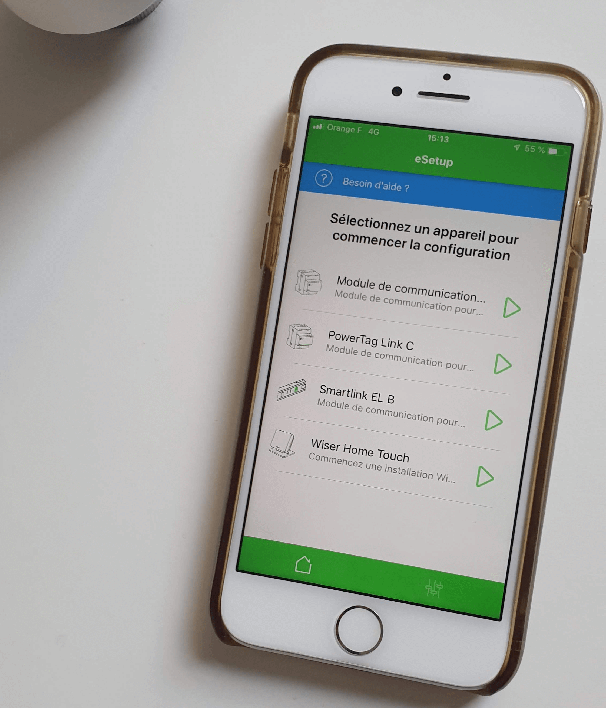

eSetup Wiser POC
[this story is divided in 2 part - at the end of the page you will have access to the next part]
eSetup is a native mobile application by Schneider Electric designed for professional installers to commission Smart Home devices for the Wiser range offer. This application is available on both Android and iOS platform.
This journey with Schneider Electric started by a simple question; How to help professionals to realize faster commissioning and how to reduce call to support ?
-
üïí Duration : January 2019 to September 2020
ü§π Role : UX Designer - Product Designer
ü§ù Onepoint Team : Project Manager / Developper / UI Designer / UX Designer
üë• Schneider Electric Team : Product Manager / Dev Team / SE Design Labs
üîß Tool : Sketch - Figma - InVision - Protopie - InVision Studio

Context
Smart home equipment demand is increasing and installers/electricians are facing new challenges due to the differences between traditional vs connected product. Schneider Electric wants to tackle this market, and by that they need to handle in one hand a great experience for end consumer, the user and in anther hand a fast and reliable experience for installers.
But it is not a one day job; professional installers do not seem to be comfortable with IoT devices when it comes to install them on a regular basis. This can be quite simply explain by this: before when a light switch was not working, they replace it and it’s done basically. When it comes to Smart Home and connected devices, any issues can be way more complicated especially when you are not an expert in that field.
In light of these observations, Schneider Electric is teaming up with Microsoft and onepoint to rebuilt from the ground the eSetup app.
It is safe to ask yourself, why asking external teams to work on this product ? Schneider already tried in the past to handle it internally but not successfully. Consequently they are asking consulting firm to propose innovative ways to tackle their problems.
Why this project?
I have selected this project as case study for my portfolio for several reasons
- My ability to thrive in ambiguity allowed me to take this mission which at the beginning a small project to a complete product approach with longterm collaboration with Schneider Eletric
- The different phases of it makes it quite complete and present an end to end approach. From definition, to ideation, to design, to test, to refinement, to validation, to development ...
- The team was cross functional and multi disciplinary to create a viable, relevant and consistent product
- The design process was rich and gathering different type of expertise; Graphic Design, Researcher, UX, 3D ...
- It allowed me to grow on the design aspects and methodologies as well as on the posture to have with a client and its various teams - What makes this project the one I am probably the most proud of today.
Challenges
The redesign of the eSetup application experience was complex and full of challenges
- To think at first a macro experience with a naive eye towards this sector and then to refine this approach in the smallest details
- Significantly improve the speed of the process and reduce the number of errors
- Optimize hardware constraints through software and user experience
- Different types of users
- Be able to collect the information even if it is not easily available (user data, having access to the users, technical information ...)
My role
I was in charge of the whole UX part of this project. From the definition of the first user flows, the design, the research phases and the user tests to the writing of guidelines for Schneider's design department. I have handle everything that will be shown below. I had a wide scope during this mission but this allowed me to have a 360° vision on the product and at the end, I believe, to have impact.
I strive to design products, services and experiences who are able to meet users need and business need.
I also gradually took on the role of lead designer on this project and managed the design team (UI Designer, 3D Designer, UX Designer). The trust that was given to me allowed me to evolve without any doubt.
I was the main point of contact for the client and today I am co-responsible for the Schneider Electric account at onepoint and I strive everyday to help this company to create useful and impactful product through a design driven approach.
The Users
On site installers
On site installers are directly installing Smart Home equipment in house or flat. The commissioning is done on site when devices are mounted. This type of installers are doing mainly small installation directly with the end consumers.
Workshop installers
Workshop installers are doing commissioning in workshop and then devices are shipped on site in order to be installed. This type of installers are working on new building installation for both B2C or B2B sectors.
The Process
I strongly believe there is no one best design process or UX process. Each project and product need a tailored solution due to delay, teams, organisation and budget. I strive to propose a different approach for each project when I am allowed to. I attempt to design products, services and experiences who are able to meet users need and business need.
One week proof of concept
Initially we proposed to Schneider Electric and with the help of Microsoft to realize a concept over a week. The objective was to quickly think of innovative solutions to accelerate the work of electricians and to conceptualize them through the eSetup user interface.
We organized a one-day workshop with the Wiser product managers from SE and Microsoft in order to test the objects (thermostats, lights, switches) and understand the commissioning process. Then we started to define the user flow.
We quickly came up with the idea of using image recognition to detect the products that the professional needs to connect.
Image recognition?
The electrician places the objects to be connected on a work surface and then, using his smartphone, he films the products so that the application automatically detects all the products present.
By doing this, the time saving can be enormous and avoid the user to select one by one the products he wants to pair.
The image recognition has another advantage, in case of errors or problems with a device it may display an error code. This code is expressed by a flashing of the leds. Depending on the colors of the leds and the frequency of the flashing, it can be determined what the error is and consequently, how to solve it. Nowadays, the user wants to look very carefully and at the same time consult the product's user guide (in pdf or paper format) - not to mention the fact that this guide has to be found beforehand - finally, with the recognition, one can imagine that the user can film his product when it displays an error and give the solution directly to the user. This gives him two things; a saving of time when problems are encountered and easy to implement solutions.

In the end, we try to access our approach on speed, reliability and to erase the frustration of professionals during this process.
At the same time, we validated the technical feasibility of these ideas with the onepoint and Microsoft technical teams. These functionalities could be based on MS's Azure services, and more specifically on Cognitive Services.
At the end of this day of reflection and ideation, I left with a concept of a userflow to refine and then design.
I then declined this flow with a macro zoning of the interface. My objective was to quickly have concrete elements to discuss.
During the rest of the week I designed with a graphic designer the flow in high fidelity while determining the main principles for the design
- A fast and direct process
- The user must have the right information at the right time
- The main actions are always accessible at the bottom of the screen to provide an optimal experience for different screen sizes (based on oneUI guidelines).
- At the request of Schneider Electric, we had to propose a design different from the current guidelines of the company
- The first graphic approach
The purpose of laying down major principles allows me to bring coherence to the design and to have arguments to convince and show that nothing is left to chance at this stage.
Even if the scope of the POC was not completely clear, I managed to work on a clear vision of the first design elements. My role was also to guide the rest of the team to have at the end of the week a flow covering the desired features. And above all, an interesting experience that had not yet been tested but will be soon.
This first phase was a success from the point of view of Schneider's satisfaction, so we were going to be able to deepen our work and confront it to the field.
Strengthen the Proof of Concept
After this first step, Schneider Electric was convinced by the result and we decided to continue the adventure.
I had to define with Schneider the key steps to strengthen the POC. The first one was to have a testable prototype and to validate it on the field with users to validate or invalidate our hypotheses and to realize the usefulness or not of the new functionalities we had imagined.
Moreover, we had to go into more detail about the user experience to offer a viable experience to installers.
It was crucial for me to test and to be as close as possible to the users to really understand their problems and their work. My vision and approach was appreciated by Schneider Electric who made me fully responsible for these steps. From that moment, I could really take in charge the subject.
The steps of this phase were as follows
-
Understand the pairing process in detail and hardware constraints
I had to understand in detail the current pairing process of Wiser products to be able to optimize it. This step was also necessary to understand the issues that users encounter when we go to talk to them.
 -
Go to the field to understand the work of professionals and meet Schneider Electric experts to discover the specificities of certain types of products (heating, lighting, etc.)
First, I met and interviewed a connected heating expert and a connected lighting expert from Schneider Electric to understand the issues in detail. I conducted these interviews with an interview guide that I had written.
The information collected allowed me to realize that the constraints related to physical products were numerous and that I had to be clever and innovative to get around them.
To mention just a few and probably the most striking; the connection hub, which works in ZigBee must be updated when it is unpacked. But this update takes about 8min and during this time, the user can do nothing else but wait. The constraint is linked to the hardware and it was impossible to avoid it. So we had to think about what actions we could propose to the user so that he doesn't lose or at least, less time. I would like to point out that during the update of the Hub, it is not possible to connect other products in parallel.
In the end the idea defined with Schneider Electric was quite simple, each device that will be connected will have to be assigned to a room. So during the update time the user can define the rooms (living room, kitchen ...) and identify the products that will be in these rooms.
For the interviews on the field, I went to meet different professionals of the sector to understand their needs and to be able to propose an optimal user experience and increase their satisfaction with Schneider Electric. During this immersion phase I was able to visit the workshops and learn more about the daily work of the professionals. -
A design phase taking into account the whole flows and thinking of ways to get around certain technical limitations
During this phase I made all the wireframes on Sketch and then worked closely with a graphic designer. I then declined all the screens.
One of the challenges of this step was to propose two variations of the design to respect the iOS guidelines and the Android guidelines.
Once the design was done for each screen, I made the clickable prototype of the journey in preparation for user testing.
Above, some iterations around a time saving feature when the hub is udpdating.
-
During this first test phase, I was able to test the prototype via InVision with Schneider Electric installers. I was able to test on 8 people at first.
During this first test phase, I was able to test the prototype via InVision with Schneider Electric installers. I was able to test on 8 people at first.
We had to define what we wanted to test precisely and then write a test guide to follow during these semi-directed tests.
I choose to do quantitative testing in order to collect rich feedback and understand more precisely what motivates installers.
At the end of a test session, I produce a report highlighting the positive and negative points according to the users' feedback and then what modifications will be necessary.
The feedback was globally very positive, especially concerning the new functionalities and the clear and contextual aspect of the interface. However, some steps did not seem direct and precise enough.
For each observation, I specify the consequences that they can have on the use and consequently a recommendation to solve the problem.
-
A second design phase to refine following the feedback collected during the test phase
We modified all the part where we had some doubt or negative feedback from testers.
üëâ See the full report for Lyon test Session -
A second user testing phase in order to get more feedback and refine the design
For this second test session I went to meet the users. I conducted 12 user tests to refine the user journey and improve its fluidity.
I’ve been directly into installers workshop to test the product and see in action if it could work on no.
At the end we gathered super useful insights for next features and interface enhancement.
At each test session, we highlight findings inside a dedicated report with a detailed analysis.
-
A third phase of adjustments according to the feedback collected during the previous test phase
The evolution of the design through the iterations
-
Delivery of the design and a design presentation document to prepare a presentation to the CEO of Schneider Electric
Delivery of the design and a design presentation document to prepare a presentation to the CEO of Schneider Electric
üìù Link to the report
üëâ Access Proof of Concept prototype
Conclusion
In the end, this project was presented to the CEO of Schneider Electric during the SE Innovative Projects Reviews. The feedback was excellent and this project was able to continue with the objective of creating a minimum viable product and to be developed further.
üëâ you can read the second case study about eSetup
Personally, this project allowed me to have an end-to-end approach and to define it with the client. To set up the different steps of the design and to realize them jointly with other members of the team.
I was also able to help Schneider Electric's teams to better understand a user and system centric approach.
Finally, on this part of the project I was able to
- Discover in detail the Smart Home sector
- Define a new approach on an existing product
- Define and field test innovative features with professional users
- Design the mobile application's flows and screens
- Set new guidelines for Schneider Electric applications
- Be part of the Schneider Electric product team
- Define a product design roadmap
The feedback from users was very encouraging and the new features seemed promising. It remained now to develop them with a technical team to realize the reliability of these features.